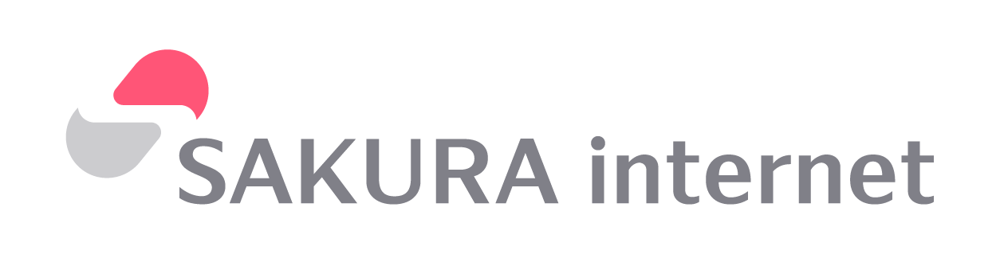
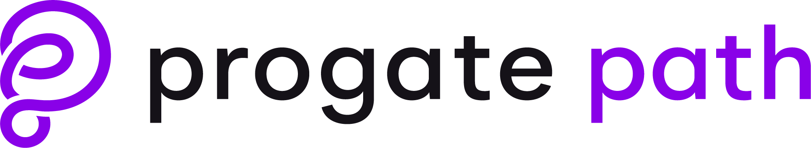
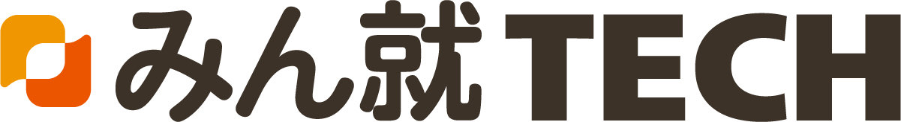

情報理工学部プロジェクト団体
Ritsumeikan Security Team
RiST
RiSTとは
RiSTはサイバーセキュリティに関する活動や研究をするために2019年に情報理工学部プロジェクト団体として認定された団体です。2022年からは対面活動を再開し、現在は活発な活動を行っています。
- サイバーセキュリティを学び、高めあおう
- 個人では出来ないような体験をしよう
- CTFやコンテストで良い成績を残そう
主な活動としては、CTFやセキュリティコンテストの参加、セキュリティに関連したLT会やセキュリティ関連の研究などがあります。 春には初心者講習会などを行い、新入生の方にもサイバーセキュリティに興味を持っていただけるような活動を行っています。
スポンサー支援・アンバサダー活動
さくらインターネット株式会社 様
さくらインターネット株式会社とは
大阪市北区に本社を置く、ホスティングサーバを中心とするデータセンター事業およびインターネットサービス事業を行う企業です。また、様々なイベントに参加したり、コミュニティの活動を支援したりするといった活動も行っています。
提供して頂いているもの
研究や活動のために必要なリソースとして「さくらのクラウド」のサーバーを提供して頂いております。
サーバーの用途
サーバーはグローバルネットワーク環境を用いた実験や、CTFを解くために必要なアプリケーションの実行環境のホスティングなどとして利用させて頂いております。

株式会社Progate 様
株式会社Progateとは
東京都渋谷区に本社を置く、オンラインプログラミング学習サービスの企画・開発・運営を行っている企業です。プログラミング学習サービスProgateの他、新たにProgate Pathというエンジニア実務向けのサービスを展開し、エンジニアを目指す人の支援をしています。
アンバサダー活動
アンバサダーの活動として、主にProgate, Progate Pathを団体内だけでなく学内に広める活動を行っています。弊団体からは３名が就任しています。
progateを用いた活動

株式会社みん就Tech 様
株式会社みん就Techとは
エンジニア志望学生のための就活支援サービスを提供する企業です。豊富な企業口コミや選考データを活用し、キャリアアドバイザーの方が面接対策・企業紹介・就活戦略を徹底サポートしていただけます。

メンバー
現在RiSTには2年43人、3年14人、4年1人の総勢58名の部員が所属しています
活動について
通常の活動は団体のメンバーで集まり主にCTFの問題を解く勉強会です。
他にもLT会(Lightning Talk)を開催したり、ハッカソンの参加、その他セキュリティイベントの参加をしています。
CTFとは？
CTF（Capture The Flag）とは、ハッキングコンテストです．情報セキュリティの専門知識や技術を駆使して隠されているFlag（答え）を見つけ出し、時間内に獲得した合計点数を競います。CTFを通じてハッキングの知識を身に着けることができます。
LT会とは？
LT(ライトニングトーク)と呼ばれる技術交流会です。毎週の活動で1人から2人が技術的な話題を持ってきて話します。 今までのLT会では「ネットワーク入門」「サーバーを攻撃しよう」「ブロックチェーン技術」「セキュリティに関連した法律」「Pythonでのデータ分析」などがありました。
その他の活動
セキュリティチームだからと言ってセキュリティのことだけを学んでいるわけではありません。セキュリティを学ぶには多くの知識が必要なため、ハッカソンやその他コンテストなどへの参加も積極的に行っています。
沿革
-
2016-11設立
-
2017-02強化合宿
-
2022立命館守山高校課題研究アドバイザー
-
2022-10さくらインターネットスポンサー締結
-
2022-11千葉大学セキュリティバグハンティングコンテストにて優秀賞
-
2022-12「プレ・エントランス立命館デー」協力
-
2023-02データセンター見学 -NTT communication
-
2023-052023年度新歓RiSTCTF開催
-
2023-10JP HacksにてBest Award Day賞、HUAWEI賞
-
2023-11千葉大学セキュリティバグハンティングコンテストにて最優秀賞
-
2024-052024年度RiSTCTF開催予定
よくある質問
活動日時
毎週木曜日に定例会をしています。
セキュリティに関する勉強会などを不定期で開催することもあります。
また、ハッカソンやその他のイベントに参加することもあります。
サークルとプロジェクト団体の違い
プロジェクト団体は学部公認の団体となるため学部からの支援を受けることができます。部室の優先割り当てや機材の援助、学部からの補助金が受けられます。所属している学生だけが得られる特典などもあります。また顧問がつくため、本来サークルが応募できない様々なイベントに参加することができます。
パソコンの知識もサイバーセキュリティの知識も全くないですが問題ないですか？
入ってくる人にはパソコンの知識がない状態の人もいます。サイバーセキュリティの知識はない人がほとんどです。どちらも入部してから先輩の補助を受けながら学ぶ事ができるため心配はいりません。
ただし、「コンピュータが好き、または興味がある事」が最低条件です。
RiSTに所属するメリット
まず、RiSTではサイバーセキュリティに関連した活動を技術や知識を持った先輩のもとで行うことができます。いろんなことを教えて貰ったり、協力したりして自分の力を伸ばすことができます。 積極的に大会やコンテストなどにも出ているため自分の実力や実績を増やすこともできます。
また、RiSTではサイバーセキュリティに関連しているいないに関わらず様々な情報やリソースを提供しています。例えば学習サイトの有料アカウントを配布していたり、様々なイベントや大会・コンテストの情報、新しい技術の情報から初心者に有益な情報などなどを提供しています。また、個人では絶対に知ることのない施設や、入ることのできない施設への見学なども行っていたりします。
経験者の場合は上回生と大会へ出場したり、学内・学外のイベントへの参加が可能となるため、自分の実力・興味に合わせて活動することができます。(もちろん初心者でもイベントや大会の参加は可能です！)
また、先輩達は1回生の授業を去年受けているので授業でのわからない問題などについても聞いたりできます。
部室の場所
立命館大学、大阪いばらきキャンパスのH棟501号室及び、H棟3階Student Activity Loungeです。
部員であれば、自習や作業などにも利用可能です。